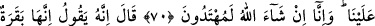
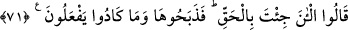

RABBİNE DUÂ ET!..
67. Mûsâ, kavmine: Allah bir sığır kesmenizi emrediyor, demişti de: Bizimle alay
mı ediyorsun? demişlerdi. O da: Câhillerden olmaktan Allah’a sığınırım, demişti.
68. “Bizim adımıza Rabbine duâ et, bize onun ne olduğunu açıklasın” dediler.
Mûsâ: Allah diyor ki: “O, ne yaşlı ne de körpe; ikisi arasında bir inek.” Size
emredileni hemen yapın, dedi.
69. Bu defa: Bizim için Rabbine duâ et, bize onun rengini açıklasın, dediler. “O
diyor ki: Sarı renkli, parlak tüylü, bakanların içini açan bir inektir” dedi.
70. “(Ey Mûsâ!) bizim için, Rabbine duâ et de onun nasıl bir sığır olduğunu bize
açıklasın, nasıl bir inek keseceğimizi anlayamadık. Biz, inşâallah emredileni yapma
yolunu buluruz” dediler.
71. (Mûsâ) dedi ki: Allah şöyle buyuruyor: O, henüz boyunduruk altına
alınmayan, yer sürmeyen, ekin sulamayan, serbest dolaşan (salma), renginde hiç
alacası bulunmayan bir inektir. “İşte şimdi gerçeği anlattın” dediler ve bunun
üzerine (onu bulup) kestiler, ama az kalsın kesmeyeceklerdi.
İsrâîloğulları’na seleflerinden sâdır olan başka bir suç hatırlatılarak, halefleri
azarlanmakta ve onlara: Mûsâ (a.s.)’ın ecdâdınıza “Allah muhakkak bir sığır
boğazlamanızı emrediyor, dediğini hatırlayın” denilmektedir.
“Sığır” diye terceme edilen “Bakara”, erkek olsun, dişi olsun sığır cinsinden bir
hayvana verilen isimdir. Yarmak mânâsına gelen “bakara” fiil kökünden isim
yapılmıştır; zirâ bu hayvanlar, zirâat için toprağı sürmede kullanılırlar.